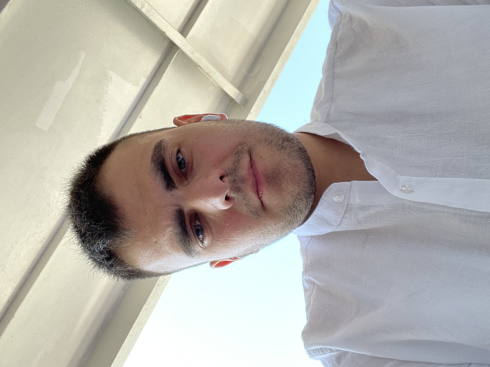

Data Center • Network • Linux • Teknik Destek Uzmanı
İstanbul • 12 Mayıs 2001
Bana UlaşBilgi teknolojileri alanında 6+ yıllık tecrübeye sahibim. D724, GÜNEY NET, TEKNOFIX ve İŞ-KAYA (Türk Telekom projeleri) gibi firmalarda stajyerlikten satış temsilciliğine ve teknik destek rollerine kadar birçok görev üstlendim.
D724 Bilişim Hizmetleri Tic. A.Ş., İstanbul
2018 - 2021
Bakım ve onarım bölümünde masaüstü bilgisayar, sunucu, yazıcı, el terminali ve Zebra marka cihazların bakım, onarım ve teknik destek süreçlerinde görev aldım.
GÜNEY NET İLETİŞİM HİZMETLERİ TİCARET LİMİTED ŞİRKETİ, İstanbul
Superonline saha satış ekibinde VDSL ve Fiber internet altyapısı satış ve müşteri ilişkileri süreçlerinde aktif rol aldım.
TEKNOFİX TELEKOMÜNİKASYON VE BİLİŞİM HİZMETLERİ, İstanbul
Türksat projesinde koaksiyel şebeke altyapısı kurulum, arıza giderme ve bakım çalışmalarında görev aldım.
İŞ-KAYA İNŞAAT SANAYİ VE TİCARET ANONİM ŞİRKETİ, İstanbul
Türk Telekom projesinde VDSL ve GPON altyapılarında kurulum, arıza giderme, bakım ve onarım çalışmalarını yürütmekteyim.
Kurumsal verilerin yüksek güvenlikli, yedekli ve profesyonel olarak yönetildiği sunucu odalarıdır. Soğutma, güç yedekleme ve network altyapısı kritik öneme sahiptir.
Sunucu kurulum ve yönetimi, VDSL/GPON altyapı kurulumu, arıza giderme, saha operasyonları ve kurumsal teknik destek hizmetleri.
Bilişim Teknolojileri alanındaki mesleki eğitimimi başarıyla tamamlayarak Kalfalık Belgesi almaya hak kazandım. Eğitim sürecim boyunca teorik bilgimi D724 Bilişim Hizmetleri Tic. A.Ş.'de gördüğüm işletme eğitimi ile uygulamalı olarak geliştirdim.